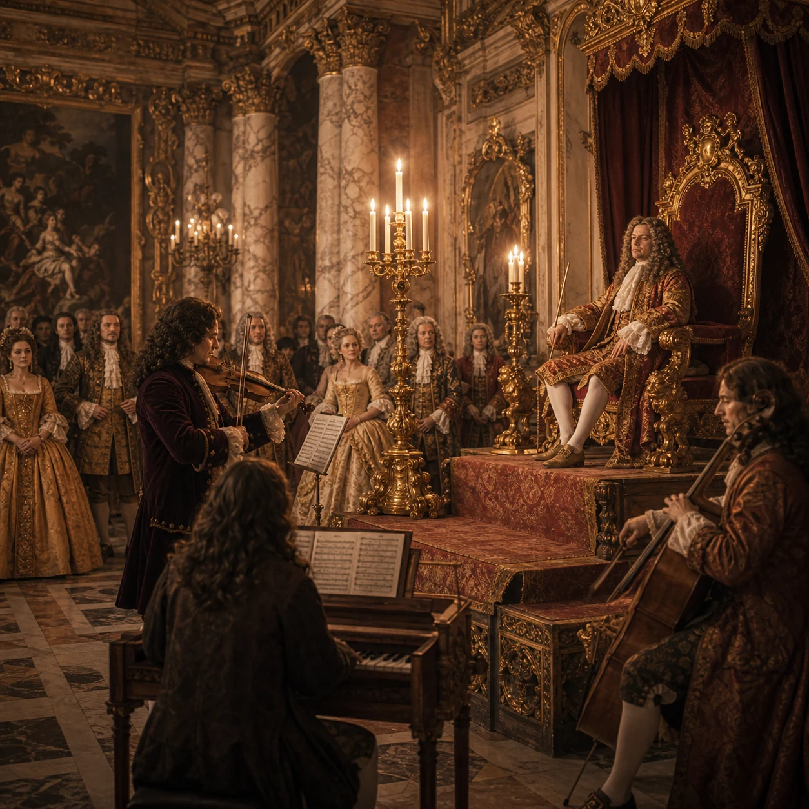
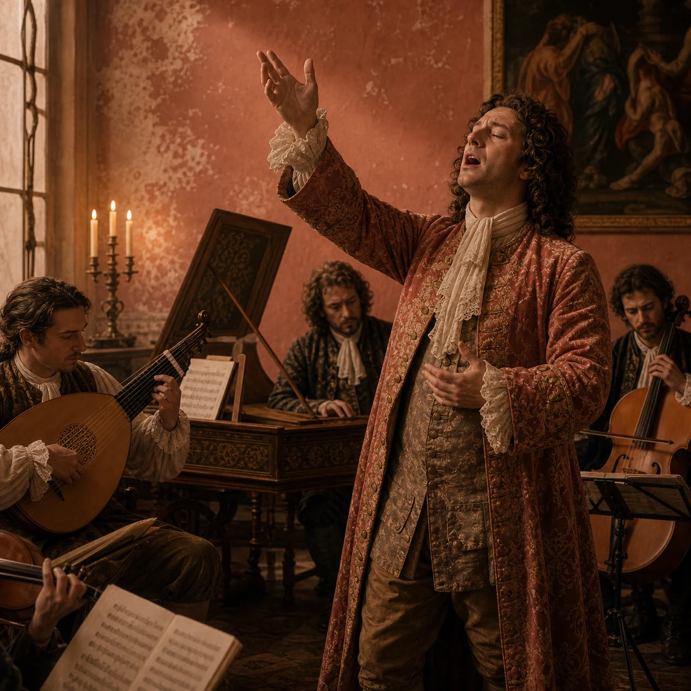
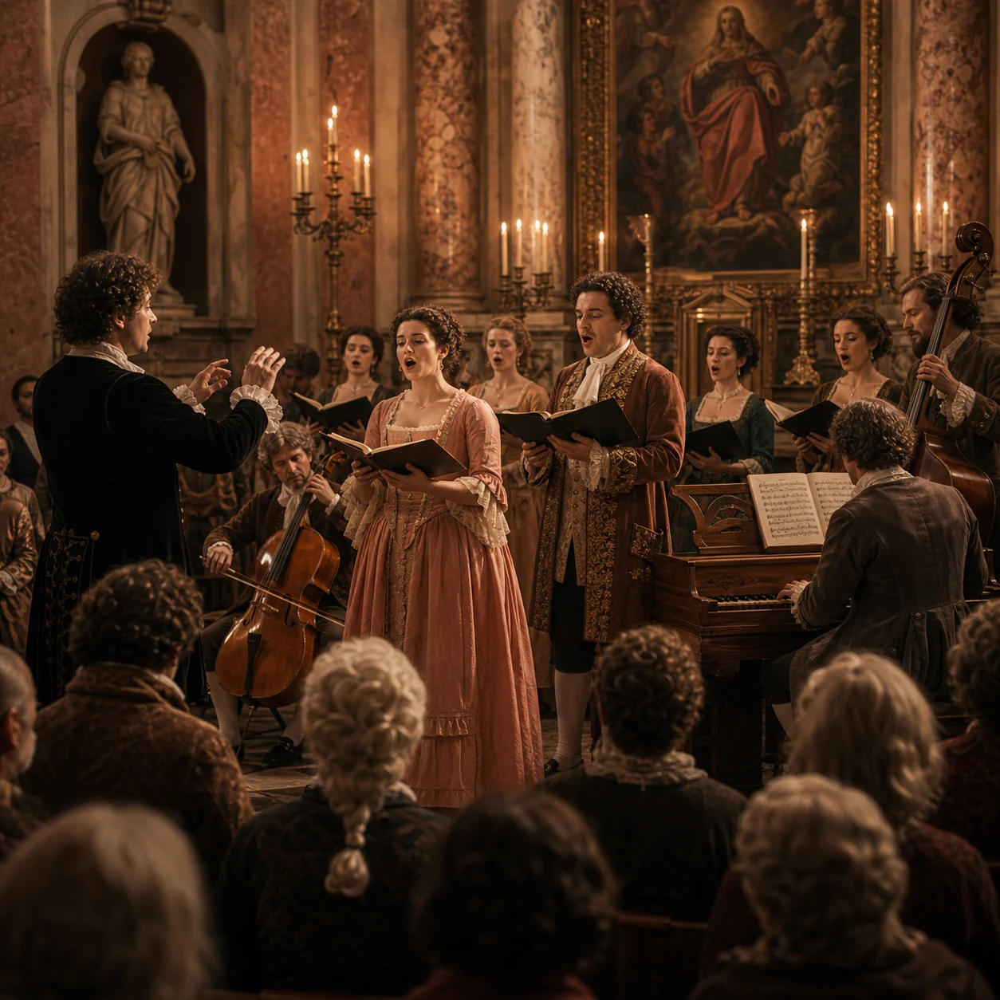
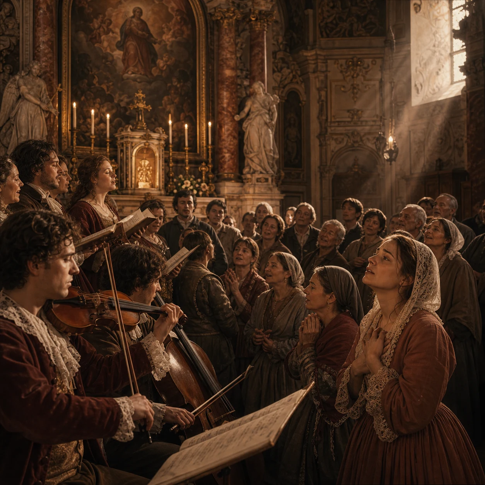
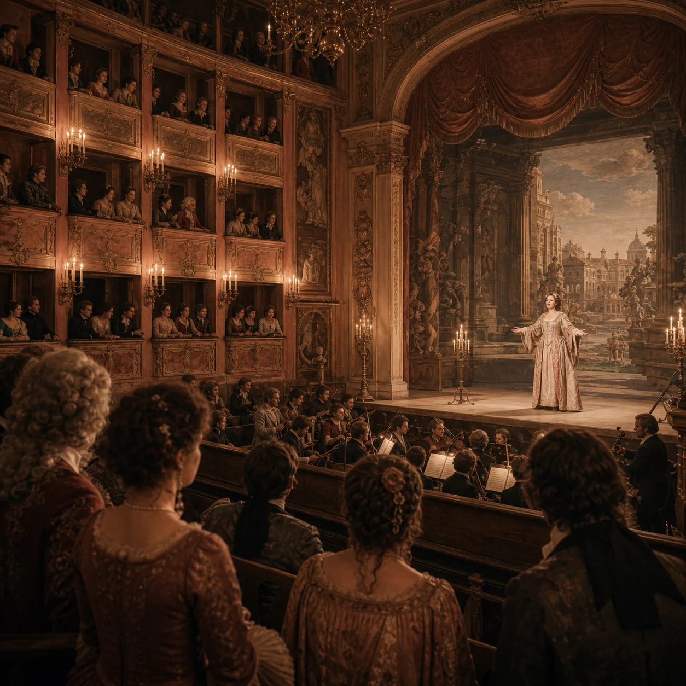
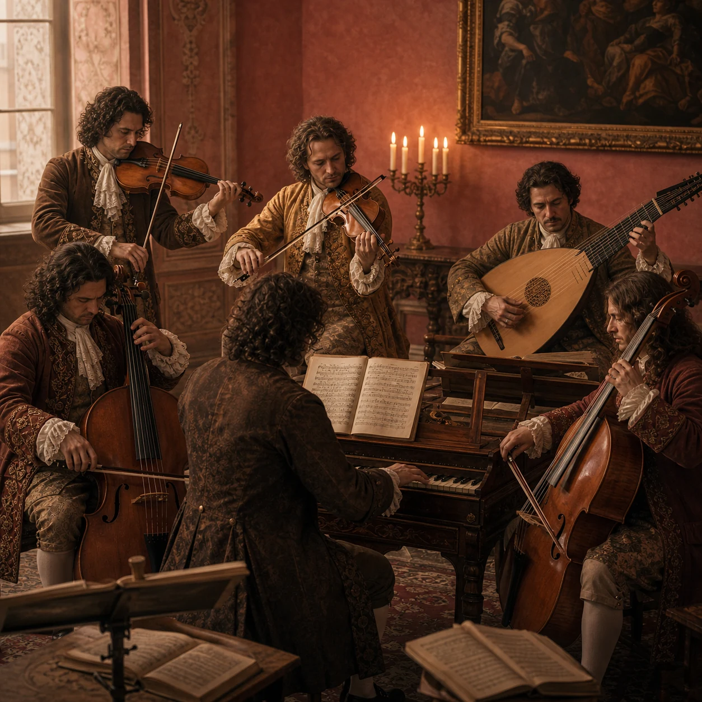
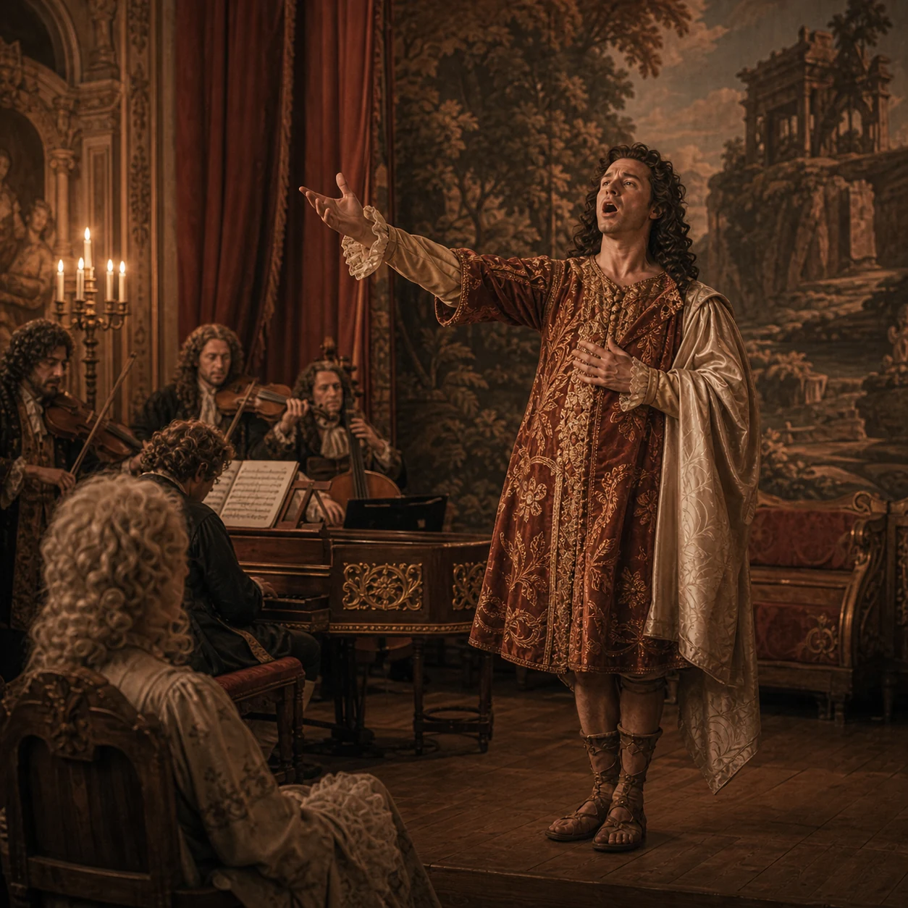
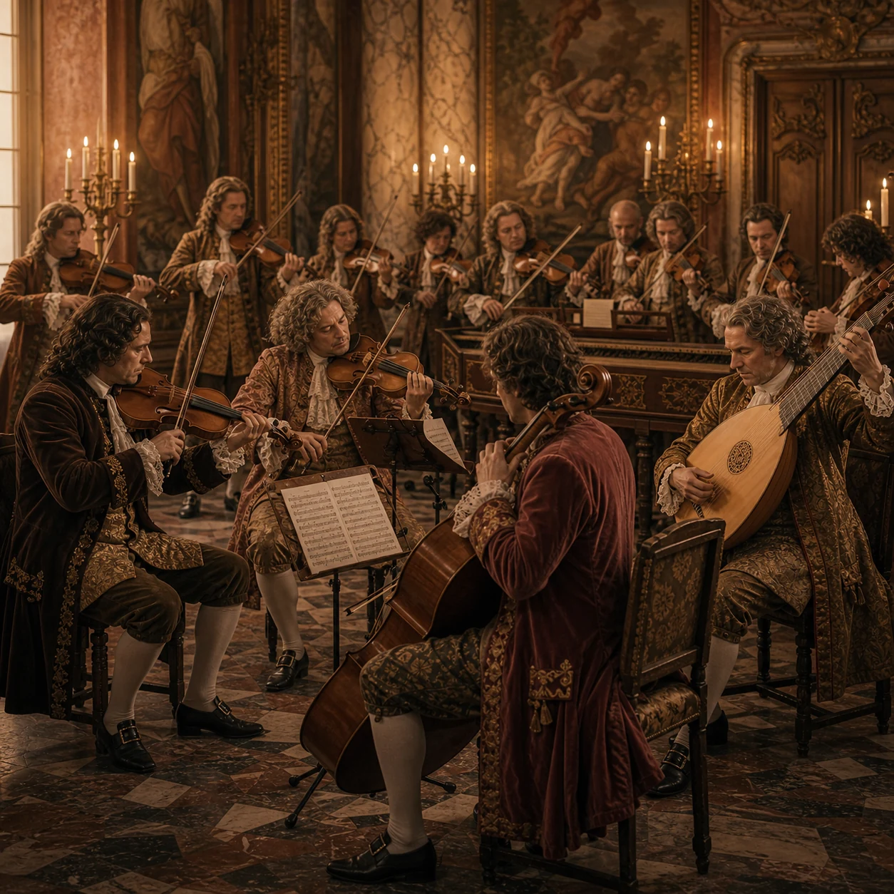
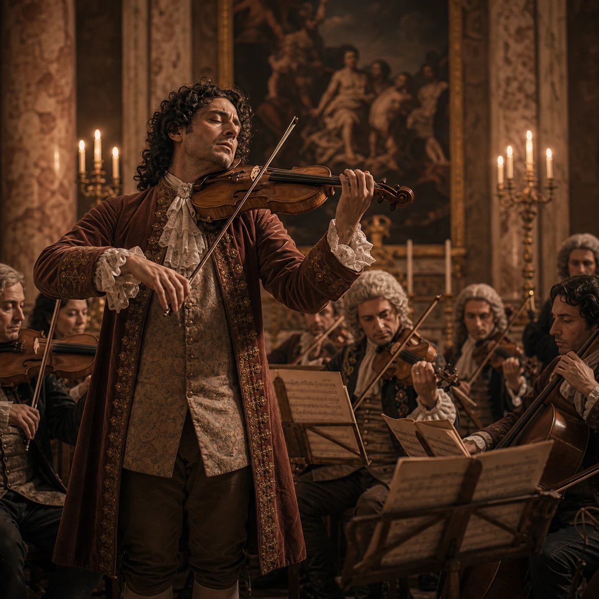
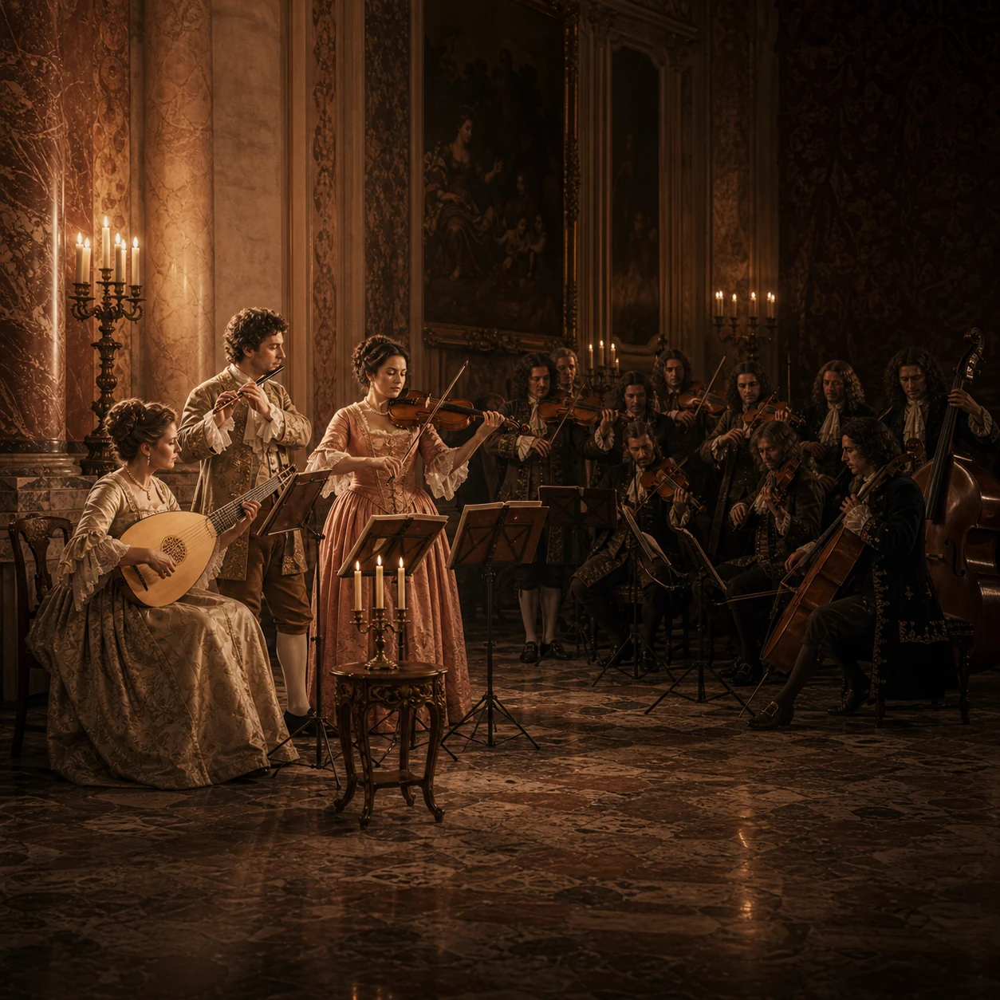

Forêts Paisibles
Un'aria-danza da Les Indes galantes (1735): linee morbide e pastorali che evocano la quiete della natura, sostenute dal basso continuo.
Tempesta
Il temporale estivo da Le Quattro Stagioni (1725): scale rapide, tremoli e contrasti violenti tra il violino solista e l'orchestra.
Badinerie
Una danza brillante dalla Suite orchestrale n. 2 in si minore: il flauto traverso domina con virtuosismo, sostenuto da archi e basso continuo.
Che tipo di brano è "Forêts Paisibles"?
Quale carattere espressivo prevale nell'ascolto?
Quale famiglia di strumenti sostiene l'armonia?
Come si può descrivere il ritmo del brano?
A quale paese appartiene il compositore Rameau?
Il titolo "Forêts Paisibles" significa:
Quale elemento barocco riconosci in questo brano?
La melodia di questo brano ti sembra:
A quale raccolta appartiene "L'Estate" di Vivaldi?
Quale tecnica evoca la tempesta negli archi?
Quale strumento ha il ruolo di solista?
Come cambia il carattere nel corso dell'ascolto?
In quale anno furono pubblicate Le Quattro Stagioni?
Le Quattro Stagioni sono ispirate a:
Quale principio barocco è centrale in questo brano?
La forma musicale delle Quattro Stagioni è:
"Badinerie" in francese significa:
Da quale opera proviene la Badinerie di Bach?
Quale strumento è protagonista della Badinerie?
Come si può descrivere il carattere del brano?
Quale ensemble accompagna il solista?
Bach è considerato maestro di quale tecnica?
Quale elemento barocco è evidente nella Badinerie?
La Suite orchestrale n. 2 di Bach è in quale tonalità?
Hai completato tutte le domande di questo ascolto.
-

La musica al servizio del potere Corte · Potere Feste e cerimonie esaltano il prestigio del sovrano. La musica diventa strumento di rappresentazione politica. -

Maggiore espressività Stile · Affetti Stupore, tensione e meraviglia nel racconto sonoro. Le emozioni guidano la composizione. -

Oratori Sacro · Racconto Storie sacre per voci e coro, senza scena. La narrazione musicale sostituisce la messa in scena. -

Coinvolgimento dei fedeli Chiesa · Liturgia Voci e contrasti rendono il rito più intenso. La musica sacra raggiunge l'emozione dell'opera. -

Teatri pubblici Teatro · Società L'opera esce dalle corti e diventa spettacolo condiviso. Venezia apre il primo teatro pubblico nel 1637. -

Orchestra barocca Strumenti · Timbro Archi, basso continuo e clavicembalo: colori nuovi. L'ensemble si stabilizza e cresce. -

Melodramma Teatro · Canto Musica, parola e teatro: si racconta cantando. La forma che darà origine all'opera moderna. -

Concerto grosso Forma · Contrasto Un piccolo gruppo di solisti si alterna all'orchestra. Il contrasto è il principio strutturale. -

Concerto solista Forma · Virtuosismo Un solo strumento dialoga con l'orchestra. La tecnica diventa spettacolo. -

Contrasti sonori Stile · Dinamica Piano e forte, solo e tutti, pieno e vuoto. Il dinamismo è il respiro della musica barocca.